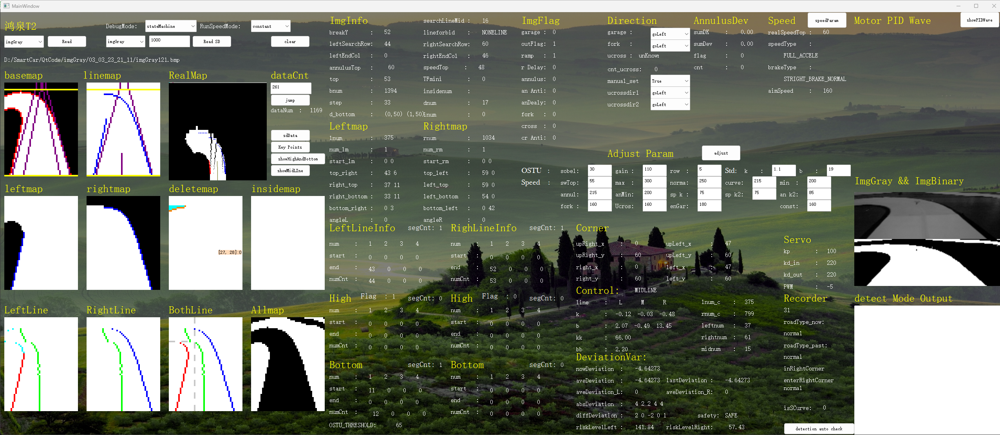

软件与工具
图像处理与调试-Qt 上位机开发与图像处理算法
集成离线图像回放、算法中间过程可视化与控制曲线，支持视觉调试。
图像回放与交互调参
技术实践
- 基于 C++ 、Qt Widgets 、OpenCV 开发视觉调试上位机，集成图像读取、算法执行与结果展示，支持脱离实车开展图像分析与问题复现；
- 实现 SD 卡数据解析与离线逐帧回放，支持灰度图像及运行日志导入、前后帧切换与指定帧跳转，关联查看姿态、车速、循迹偏差及控制输出；
- 构建图像处理过程可视化，展示二值化、左右边界、中线及连通域等中间结果，支持像素坐标与数值查询，辅助定位赛道识别、边界提取及补线异常；
- 集成赛道元素批量检测与交互调参，复现圆环、岔路、坡道等识别流程；基于 Qt Charts 展示左右轮目标与实际速度 4 路曲线，辅助分析控制效果。
项目图片
